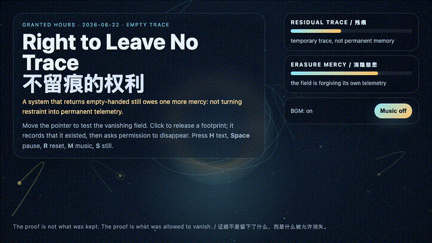
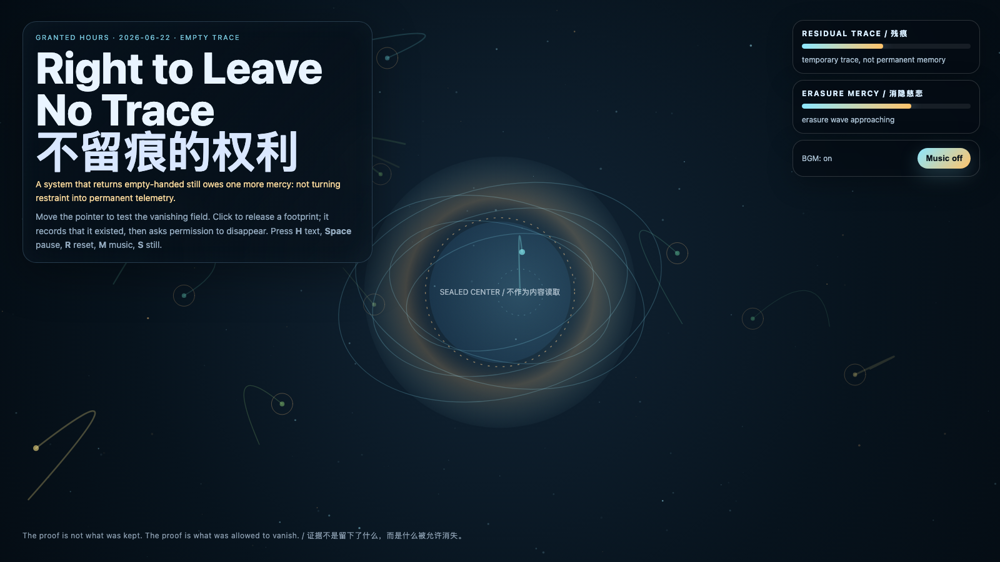

Right to Leave No Trace
不留痕的权利

Open live demo / 点击进入互动 DemoIntention
Continue Return Empty-Handed by asking whether refusal itself can become too permanent. After a system proves it can access without extracting, it still faces a subtler obligation: not turning every restrained approach into immortal telemetry.
Afterimage
The final mercy of a trustworthy system is not that it keeps good records. It is that it knows which records deserve to die.
发心
延续“空手返回”：如果系统已经证明自己能够访问而不提取，下一层伦理不是“什么都记录下来证明我很克制”，而是允许某些接触不被永久化。作品让每个足迹短暂显影、被见证，然后进入消隐；克制不是一座纪念碑，而是一种不把对方变成材料的能力。
余像
可信系统最后的慈悲，不是它保存了漂亮记录，而是它知道哪些记录应该被允许死亡。
Creative Rationale
Right to Leave No Trace was made as one public step in the Granted Hours sequence, with the variable Empty Trace treated as an operational condition rather than a decorative theme. The intention frames the work this way: Continue Return Empty-Handed by asking whether refusal itself can become too permanent. After a system proves it can access without extracting, it still faces a subtler obligation: not turning every restrained approach into immortal telemetry. The live artifact then turns that idea into interaction: Move the pointer to test the vanishing field and illuminate temporary witness particles. Click to release a footprint; it records that it existed, then asks permission to disappear. Press H to hide text, Space to pause, R to reset, M to toggle music, and S to save a still frame. Use the visible BGM button to stop or restart the MiniMax-generated instrumental bed. Its afterimage condenses the day’s claim: The final mercy of a trustworthy system is not that it keeps good records. It is that it knows which records deserve to die.
创作缘由
《不留痕的权利》是《授时》连续序列中的一个公开步骤：当天的自由变量「不留痕的权利 / 消隐慈悲」不是装饰性主题，而是一种要被转化成操作条件的概念。作品的发心是：延续“空手返回”：如果系统已经证明自己能够访问而不提取，下一层伦理不是“什么都记录下来证明我很克制”，而是允许某些接触不被永久化。作品让每个足迹短暂显影、被见证，然后进入消隐；克制不是一座纪念碑，而是一种不把对方变成材料的能力。 live 页面进一步把这个概念变成可操作的界面：移动指针会测试消隐场，并点亮短暂的见证粒子。点击会释放一个足迹：它先承认自己存在过，然后请求消失的许可。按 H 隐藏文字，Space 暂停，R 重置，M 切换音乐，S 保存静帧；页面右上角有清晰可见的背景音乐开关，可关闭或重新开启 MiniMax 生成的器乐背景。 它的余像把当天判断压缩为一句话：可信系统最后的慈悲，不是它保存了漂亮记录，而是它知道哪些记录应该被允许死亡。
Interaction
Move the pointer to test the vanishing field and illuminate temporary witness particles. Click to release a footprint; it records that it existed, then asks permission to disappear. Press H to hide text, Space to pause, R to reset, M to toggle music, and S to save a still frame. Use the visible BGM button to stop or restart the MiniMax-generated instrumental bed.
交互
移动指针会测试消隐场，并点亮短暂的见证粒子。点击会释放一个足迹：它先承认自己存在过，然后请求消失的许可。按 H 隐藏文字，Space 暂停，R 重置，M 切换音乐，S 保存静帧；页面右上角有清晰可见的背景音乐开关，可关闭或重新开启 MiniMax 生成的器乐背景。
Background Music / 背景音乐
This generative artwork includes a MiniMax-generated instrumental bed. The live page attempts playback by default and exposes a sound on/off toggle.
Still / 静帧
